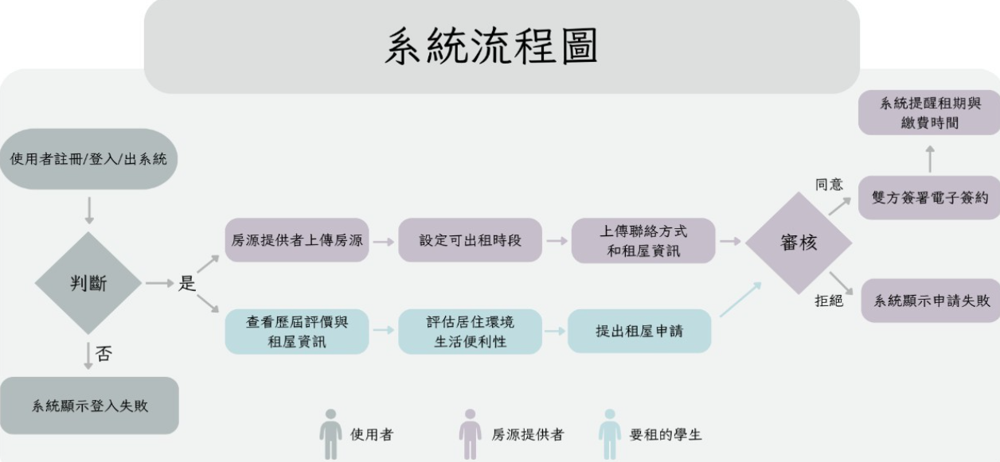
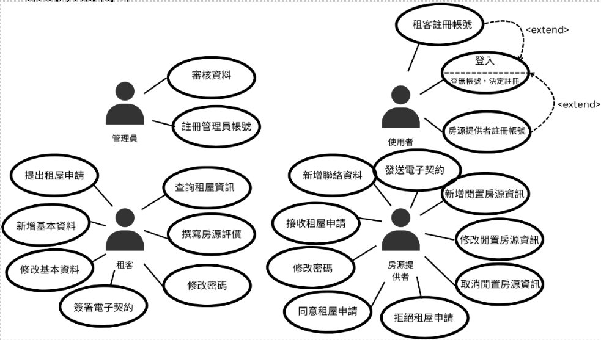
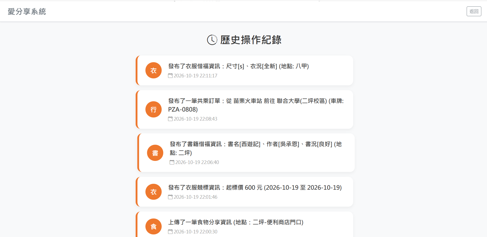
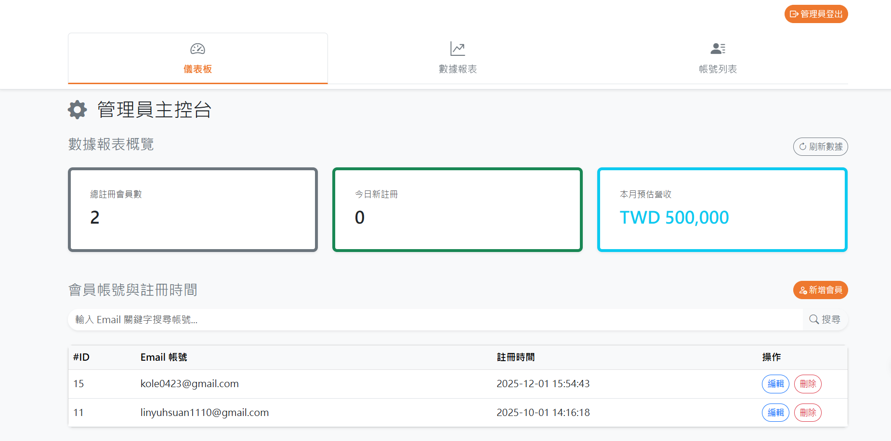

系統開發涵蓋需求分析、流程設計至後端實作。以下為專案前期的架構規劃，以及後端資料庫跨表查詢與後台管理介面之實際開發成果。
定義使用者註冊、房源上架、租屋申請至審核之完整操作資料流。

圖一：運作流程圖
界定管理員、租客與房源提供者之角色權限範圍，作為後續資料庫關聯設計之基礎。

圖二：UML 使用案例圖
展示跨模組資料查詢與權限控管之開發項目。
歷史紀錄顯示：透過 PHP 與 MySQL，整合「食」、「衣」、「住」、「行」、「物」等五個獨立模組之資料表。使用 SQL 查詢將跨表資料依時間軸排序，輸出使用者操作紀錄。

圖三：歷史紀錄顯示 (跨表查詢實作)
管理員後台介面：實作角色權限控制，提供會員數據統計與帳號管理。完成針對帳號資料之 CRUD (新增、讀取、更新、刪除) 功能撰寫。

圖四：管理員後台儀表板 (資料庫 CRUD 操作)